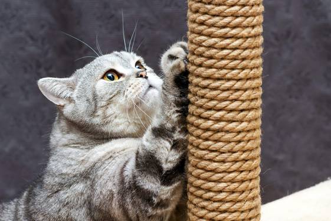

Правильный уход — залог здоровья вашего питомца
Кошки или собаки — каждый питомец требует внимания. Скачайте чек-листы и получите практические рекомендации ветеринарных врачей по уходу и гигиене.

Чек-лист по уходу за кошками
Чтобы получить чек-лист — нужно зарегистрироваться. Он придёт вам на почту.
Читайте подборку статей по уходу
Уход за шерстью кошки
Как правильно вычёсывать, купать и ухаживать за шерстью кошки в зависимости от типа и длины.
Читать статьюУход за когтями и ушами кошки
Стрижка когтей, чистка ушей: как делать правильно и как часто.
Читать статьюУход за зубами кошки
Как приучить к чистке зубов и предотвратить стоматологические проблемы.
Читать статьюПозаботьтесь о питомце заранее
Онлайн-консультация с ветеринаром
Терапевт уже ждет вас!
Страховка для питомца
Безлимитные консультации и возмещение расходов на лечение